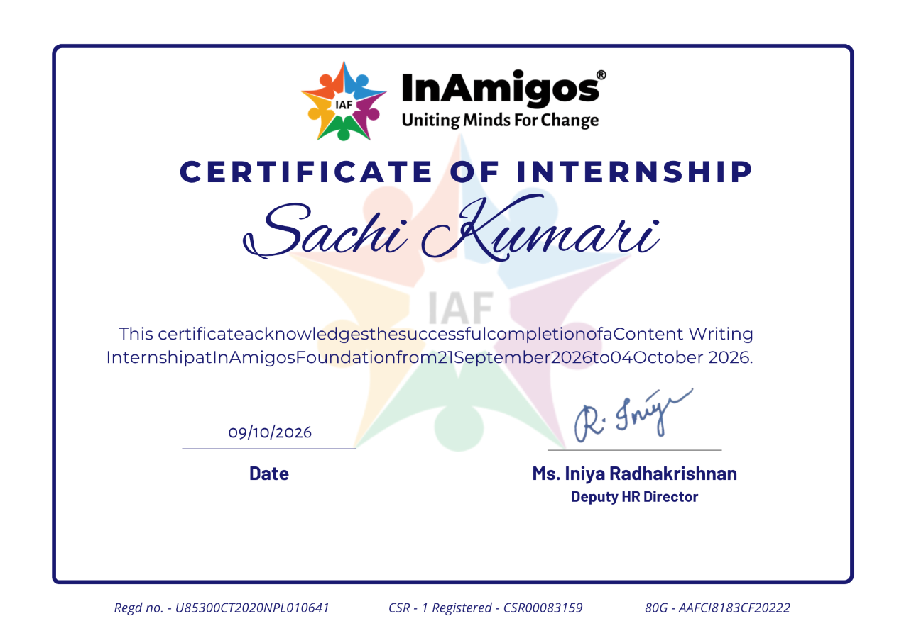
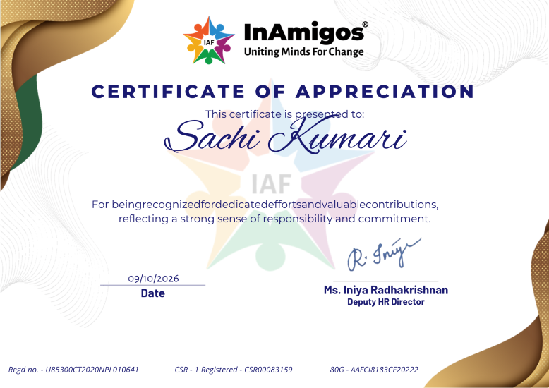

Content Writer Intern, InAmigos Foundation
- Top 3 performer out of roughly 20 interns.
- Brought in 6 referrals for the internship in one day. The task asked for at least 2.
- Wrote social media content for InAmigos projects, including Bachpanshala (children’s education), and a pitch for companies looking for a CSR partner.
See the certificates

